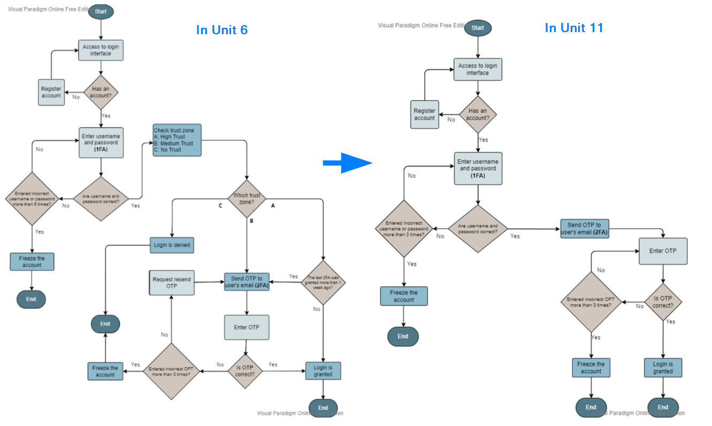
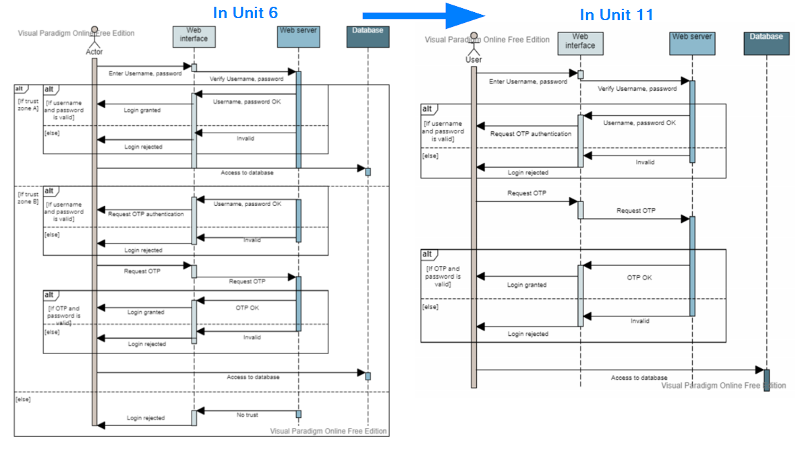
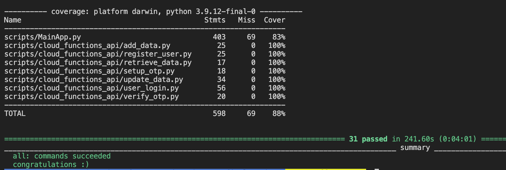

Contribution & Evaluation
of the projects
Evaluation
Design document - Unit 6
- My evaluation of the design document in Unit 6
- [Our TeamWork] - Development Team Project: Project Report
Design document - Unit 11
- My evaluation of the final project in Unit 11
- [Our TeamWork] - Development Team Project: Presentation
Individual Contribution
Planning
• Investigated SDLC methodologies and propose the result to my team
• Participated in designed and created tasks
• Participated reviewed and reprioritize tasks
• Designed and updated our plan (in below spreadsheet) for everyone to follow easily

- Click to open
Open Plan in excel sheet
Development
• Initiated the first assignment outline which gave our team a good place to start
• Studied requirements and explained the main goal to our team to ensure we focus on the right place
• Provided ideas for game development
Planning
• Being proactive and responsive to ensure everyone’s voice is heard
• Prepared agenda for each team meeting and controlled meeting time to ensure the fruitful discussion
• Collected my concerns and optimization ideas and brought them to my team’s attention
• Communicated with our tutor regarding the questions raised by my team
- Go to Artefact
All diagrams are included in the Artefact Page
Project in Unit 11
My evaluation
In Unit 11, we need to build up the application based on our design from the previous assignment with our proposed features. Although this was an exciting project that we can be creative and practical, it was indeed a complicated and time-consuming developing process.
As we all realized the project would challenge, our team started the team meeting regarding this project quite early, and it allows us to have more time to make the full plan. Making a plan for this project was not easy, as there were many aspects to be concerned about. We needed to decide which resources to use, and how the data and actions should be linked before we can start a further discussion.
I appreciated that Yvone set up the database in AWS and Yusuf set up the API functions from GCP, which provided the team an environment to initiate our development. Once the environment was set up, we could finally investigate the workload in detail. For instance, how to achieve each proposed feature, how the interface should look like, and what the expected behavior corresponds to each function. We realized the workload was huge, which required each member to spend a big amount of time developing each part.
We were facing another problem, that some bugs occurred during development, which means more time was required to fix those issues while our workloads were already overloaded. Thanks to our teamwork, each member was willing to investigate each raised bug and solve them with their experience. Our project could never be completed in time without the support and collaboration of our amazing team.
We developed our application based on the first assignment. However, we made some changes to simplify the application. The reason is to complete our project in time and focus on the core feature we agreed on for the application. The below screenshots show we simplify the workflow by removing the trust-based authentication.
 - Click to Open
[Our TeamWork] - Development Team Project: Coding Output
Test result
- Click to Open
Test Log
My Individual Contribution
• Being proactive in the team discussion
• Conduct the team meeting and prepare the topics
• Provided all meeting notes for the team
• Provide ideas regarding document layout, and to-do-list
• Participated in developing functions, updating database, and output testing
• Participated in the final demonstration of the admin user featured
- Go to Artefact
All testing scripts are included in the Artefact Page